Page 18 of 21
Make a song: Rooftop Light
Build a full band song step by step: a sequencer with drums, bass and guitar, a General MIDI choir, and the effects that make it sound real.
In this tutorial you build one song from start to end and meet most of AMPLE on the way. It is a calm, widescreen band song of 40 bars: a drum kit, a bass and a strummed guitar from the sequencer, a choir made of two General MIDI voices, and an effect chain for every instrument. Listen to the result first.
The complete song is in the folder docs/examples/24-tutorial-song of the project: song.amplet and sequences/band.seq. Open it next to this page if you want to see everything at once.
| Bars | Part | Chords | What happens |
|---|---|---|---|
| 1 to 4 | Intro | Am F C G | hi-hat and a soft guitar; the choir comes in at bar 3 |
| 5 to 12 | Verse | Am F C G, twice | a light groove, a syncopated bass, the guitar strums |
| 13 to 20 | Chorus | F C G Am F C E E | everything opens up: full drums, a bass in pulses, a louder choir |
| 21 to 28 | Verse 2 | like the verse | the same groove, the choir a little louder |
| 29 to 36 | Chorus 2 | like the chorus | the biggest part |
| 37 to 40 | Outro | F C Am Am | the band thins out and the song fades away |
1. Set up the project#
Make a project and put three sample sets in its samples folder. They come with AMPLE in the audio-packs folder and are free to use.
ample new rooftop-light| Copy this folder of audio-packs | to samples/ as |
|---|---|
free/big-rusty-drums/kit | kit (kick, snare, tom, hat and open hat) |
free/emilyguitar/emily | guitar (an acoustic guitar, one recording per note) |
free/black-and-blue-basses/babyblue | bass (a bass guitar, one recording per note) |
The choir needs no files: it uses the General MIDI sound font that AMPLE can install (node tools/fetch-gm-soundfont.mjs --download), which a block reaches with file pack:musescore-general.
The tempo and the master seed go in the first line of the song, the project line:
composition "Rooftop Light" { ample 1 tempo 92 master-seed 20261008 }2. The band: one sequencer#
Add a sequencer block, name it band, and in the project panel choose Add, Sequence. The block points at the file:
sequencer band stable@1.0 at 1 for 40 {
file sequences/band.seq
lanes lane1=kick lane2=snare+tom lane3=hat+open lane4=bass lane5=gtr
}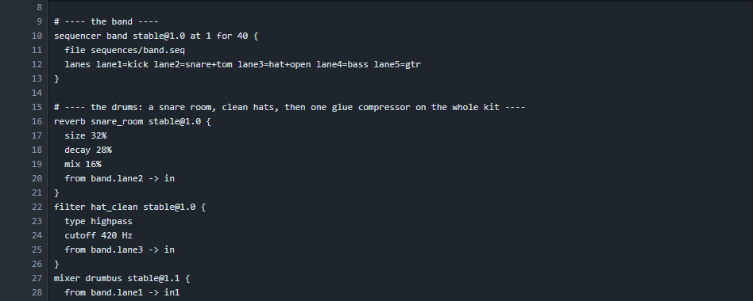
Press Open the sequencer. This is where the band is made. Read The sequencer if the workspace is new to you.
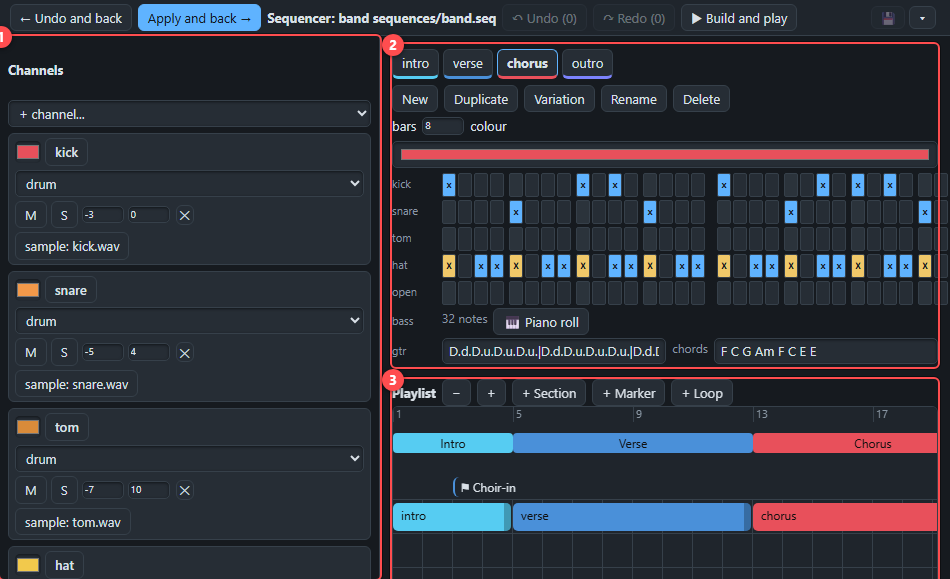
The channels#
Seven channels, each with its own level and place in the stereo picture:
| Channel | Type | Sound |
|---|---|---|
| kick, snare, tom, hat, open | drum | one sample each from the kit |
| bass | notes | the bass sample set (samples/bass) |
| gtr | guitar | the guitar sample set, strummed (samples/guitar, open voicing) |
The hat is a little to the left and soft (-13 dB), the toms a little to the right: small differences that make a kit sound like a kit and not like a row of samples.
The patterns#
There are four patterns: intro, verse, chorus and outro. A drum row has 16 steps a bar; X is an accent, x a normal hit, o a quiet ghost hit. The hat of the chorus is a lively sixteenth pattern with accents, X.xxX.xxX.xxX.xx; the verse has a calmer X.o.x.o.X.o.x.o..
To make the groove feel played and not typed, the patterns are not the same every bar:
- the kick moves a step in some bars (
x.....x.x.x.....instead ofx.......x.x.....), - the snare gets a small fill at the end of every fourth bar,
- the open hat rings on the last step of every second bar,
- the toms play a short roll before the next part begins.
The guitar row is a strum plus the chords of the part, one for each bar. D is a downstroke and u an upstroke, a capital is louder, x is a muted stroke:
gtr D...D.u.D.u.D.u.|D...D.u.D.u.D.u.|D...D.u.D.u.D.u.|D...D.u.D.uxD.u. chords Am F C GThe bass follows the chords. In the verse it plays a syncopated pattern (a long note, a short one, and a step up to the fifth), in the chorus steady pulses with a jump to the octave on the last beat.
The playlist#
The playlist puts the patterns in order: the intro, a verse of 8 bars (the 4-bar pattern repeats), the chorus, and so on. The bands above the clips are sections with a name, and the flag at bar 3 is a marker that says where the choir comes in.
The lanes#
The sequencer sends everything to the output called mix, but we want to treat every group differently, so each group gets its own lane.
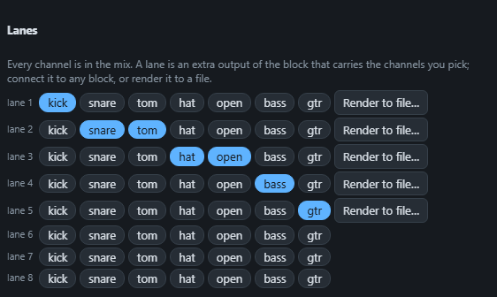
Press Apply and back. Each lane is now a port of the block that you can connect to effects.
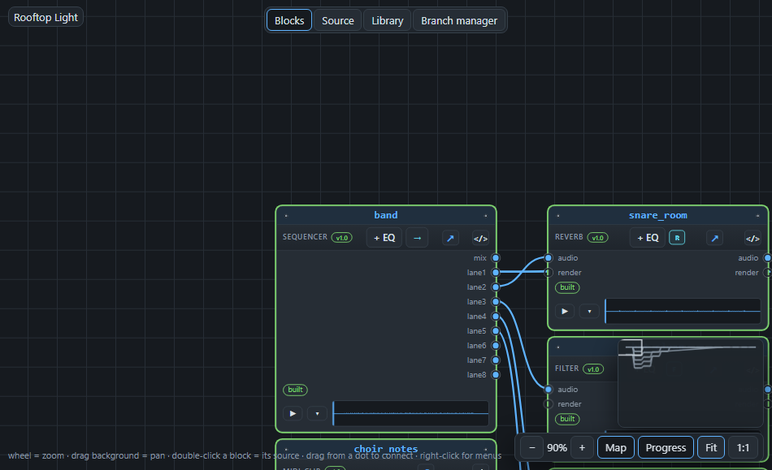
3. The choir#
A choir of two General MIDI sounds, Choir Aahs (program 52) and Voice Oohs (program 53), sings long chords. The notes are four voicings a bar, written closely together, so that the voices move by a step instead of jumping:
| Chord | Notes | In letters |
|---|---|---|
| Am | 57 60 64 69 | A3 C4 E4 A4 |
| F | 57 60 65 69 | A3 C4 F4 A4 |
| C | 55 60 64 67 | G3 C4 E4 G4 |
| G | 55 59 62 67 | G3 B3 D4 G4 |
| E | 56 59 64 68 | G#3 B3 E4 G#4 |
A voice that stays on the same note while the chords change is what makes a choir sound like people instead of like keys. The notes are written once, with a velocity (how hard) per part: very soft in the intro (42), soft in the verses (54 and 58), and 84 and 92 in the choruses, where an extra high voice, an octave above the top one, joins in.
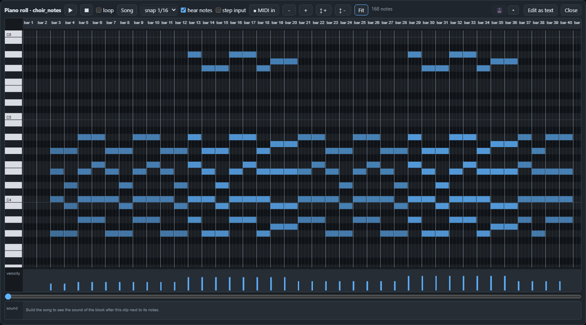
Both choirs play the same notes but get them through their own midi-humanize block. It shifts every note a tiny bit in time and in velocity (the settings are timing 18 and velocity 9 for the first voice, 26 and 12 for the second), differently for each. Two voices that are never exactly together are the oldest trick to make one sound into a crowd.
midi-humanize choir_loose stable@1.0 {
velocity 9
timing 18
from choir_notes.notes -> notes
}
gm choir_aahs stable@1.0 at 1 for 40 {
file pack:musescore-general
program 52
gain -2 dB
from choir_loose.notes -> notes
}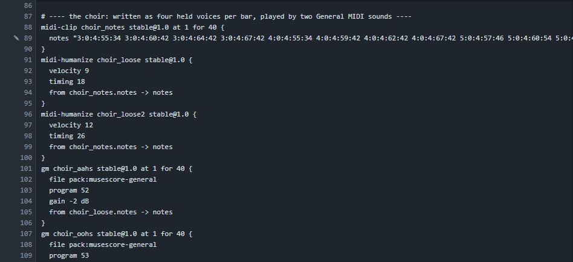
4. Make it sound real#
A raw sample or synth sounds like a demonstration. What makes it sound like a recording are the small things done to every part. Here is the graph after the build, and the places to look at.
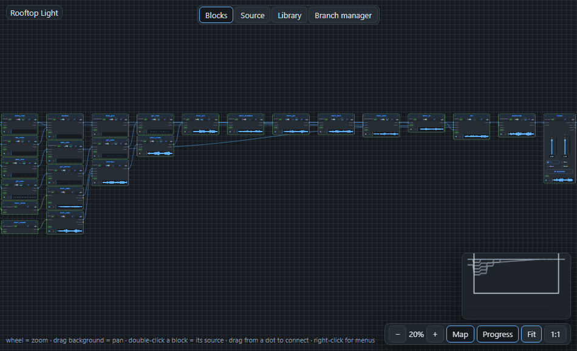
The drums#
The kick goes straight into a drum bus, a mixer that adds the whole kit. Around it:
- the snare and the toms go through a small reverb (
size 32%,mix 16%): a room that is clearly there but does not blur the beat, - the hat goes through a high-pass filter at 420 Hz: a hi-hat has nothing useful below that, and removing it leaves space for the bass,
- the bus ends in a compressor with a ratio of 3 that holds the kit together, so that it sounds like one instrument.
The bass#
A small EQ gives the low end a little push (+2 dB under 120 Hz) and takes the clicks of the top (-4 dB), and a compressor (ratio 4) evens out the notes, so every note of the bass is heard.
The guitar#
A guitar straight from samples is dry. Four effects: an EQ that cuts the low rumble (-5 dB under 200 Hz) and adds some air at 4 kHz, a chorus with a slow movement that makes it wider, a delay with a dotted-eighth time (489 ms at 92 BPM, so the echoes dance with the beat) and a small reverb.
The choir#
The choir has the longest chain, because it must feel like a space. A mixer adds the two voices, with the Aahs a little to the left and the Oohs to the right. Then:
- a high-pass filter at 170 Hz takes out the mud,
- an EQ lowers the low-mids and lifts the top a little,
- an ensemble chorus (a slow, deep movement) makes the voices thicker,
- a short delay (163 ms) gives them a little pre-echo,
- a big reverb, the hall, with a size of 92% and a tail of nearly eight seconds.
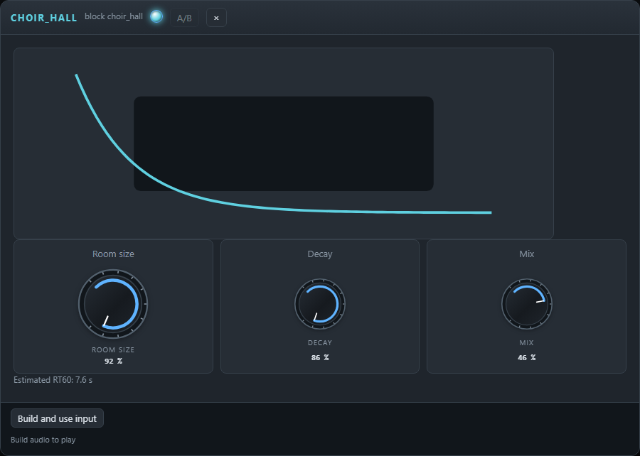
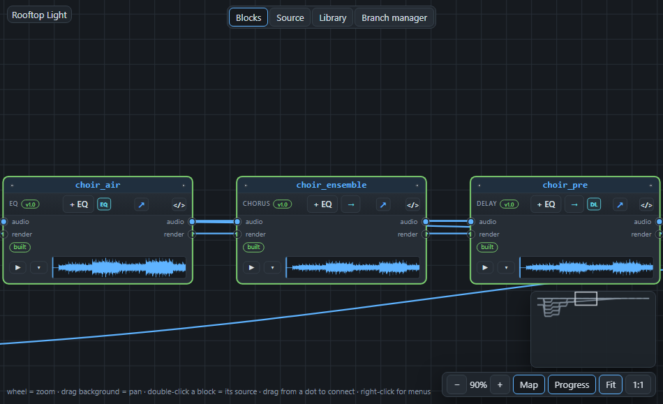
At the end of the chain a compressor does something special: it is a sidechain compressor. Its key input is connected to the kick lane, so every time the kick hits, the compressor presses the choir down a little and lets it come back during the next 220 milliseconds. You will not hear it as an effect; you hear that the kick and the choir share the space.
compressor choir_duck stable@1.0 {
threshold -34 dB
ratio 3
attack 6 ms
release 220 ms
from choir_hall.out -> in
from band.lane1 -> key
}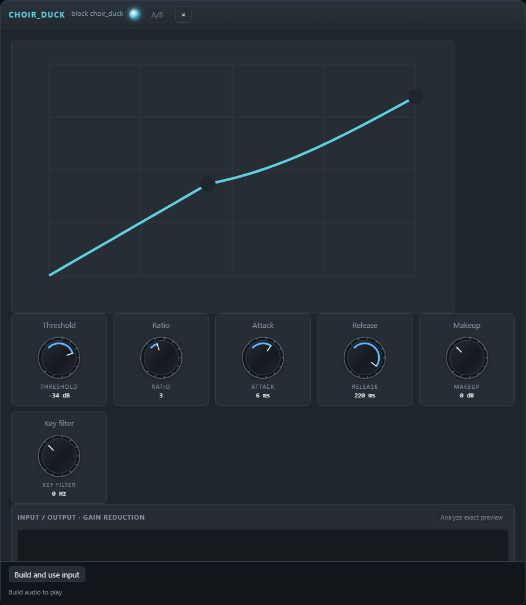
Last, a fade block lets the choir swell in over the first four bars.
5. Mix and finish#
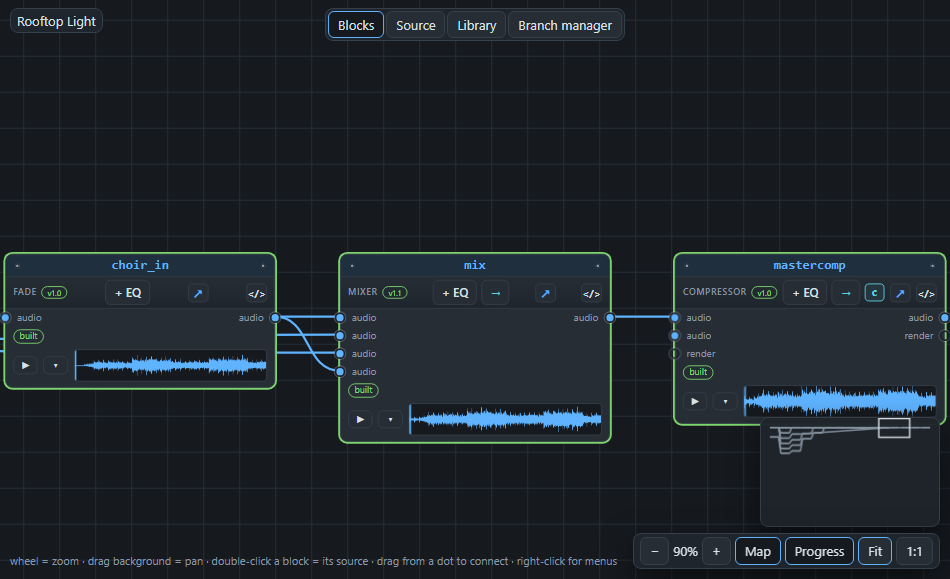
The four groups (drums, bass, guitar, choir) go into one mixer. Every input has its level:
mixer mix stable@1.1 {
from drum_glue.out -> in1
from bass_even.out -> in2
from gtr_room.out -> in3
from choir_in.out -> in4
gains 6 4 2 1
pan c c c c
}Then three things make it a finished song:
- a gentle compressor over the whole mix (threshold -18 dB, ratio 2.2, makeup 6 dB) brings the average level up without taking the life out of it,
- a volume block with
gain fadeout(38, 3, exp)fades the song away from bar 38 over three bars, - the master has a limiter that keeps the peaks under -1 dB.
volume finale stable@1.0 {
from mastercomp.out -> in
gain fadeout(38, 3, exp)
}
master master live@1.3 {
from finale.mixed -> mix
}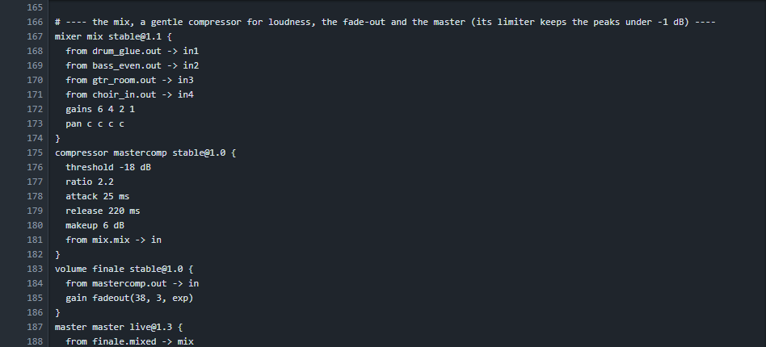
6. Build and listen#
Press Build and play. The first build renders all 28 blocks (about 25 seconds); later builds only render what you changed. The arrangement shows the structure: the intro is quiet, the choruses are the loudest, and the end fades.
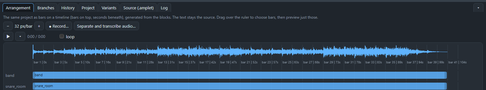
Useful ways of listening:
- Mute and solo channels in the sequencer to hear only the drums or only the guitar.
- Press the ▶ on a block to hear that point of the chain: the dry guitar next to the one after its chain tells you what the effects do.
- Choose some bars on the arrangement ruler and play them in a loop while you change a knob.
7. Make it yours#
- Change the sound of the choir: put the program of
choir_aahs(52, Choir Aahs) on 54 (Synth Voice) or 48 (String Ensemble) and build again; only the choir blocks are rendered. - Swap the drum kit: point the
kitof the channels at another sample folder. The song is built again with it. - Replace the choir by guitars: take the two
gmblocks out and put twoguitarblocks in their place, reading the same notes. A guitar block builds a chord from the first two notes of a bar, so give it the root and the third of each chord. This makes a completely different song from the same arrangement. - Change the key: change the chords of the patterns and the pitches of the choir notes. Move everything three semitones up and the song is in C minor.
- Save the band as a bundle (see Library bundles) and place it in another song.
Next: read the text of the song from top to bottom. The complete song is in docs/examples/24-tutorial-song, and every line of it is explained on this page. When a word is new, hover over it for its meaning or open the dictionary.